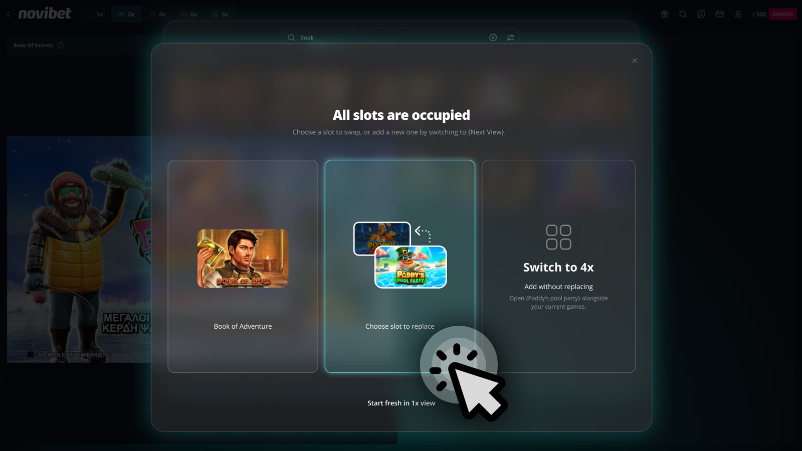
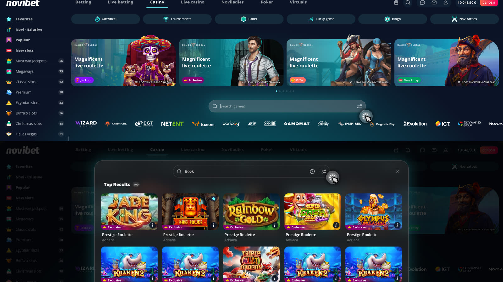
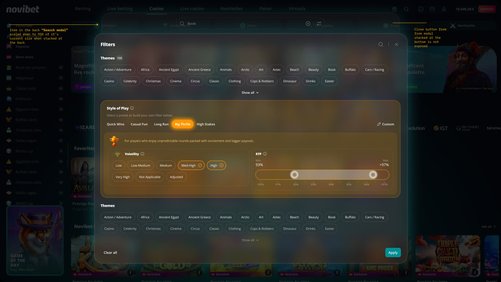
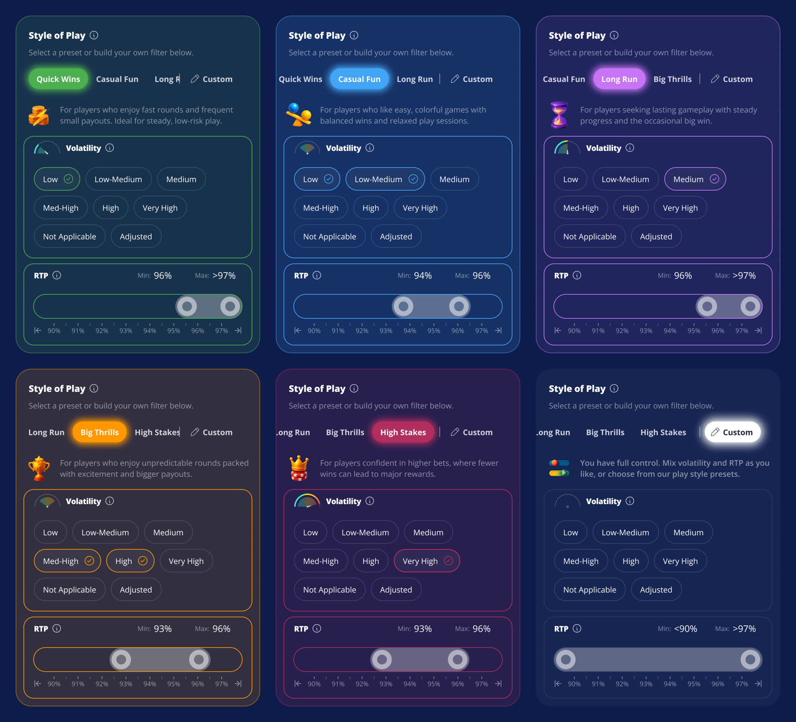
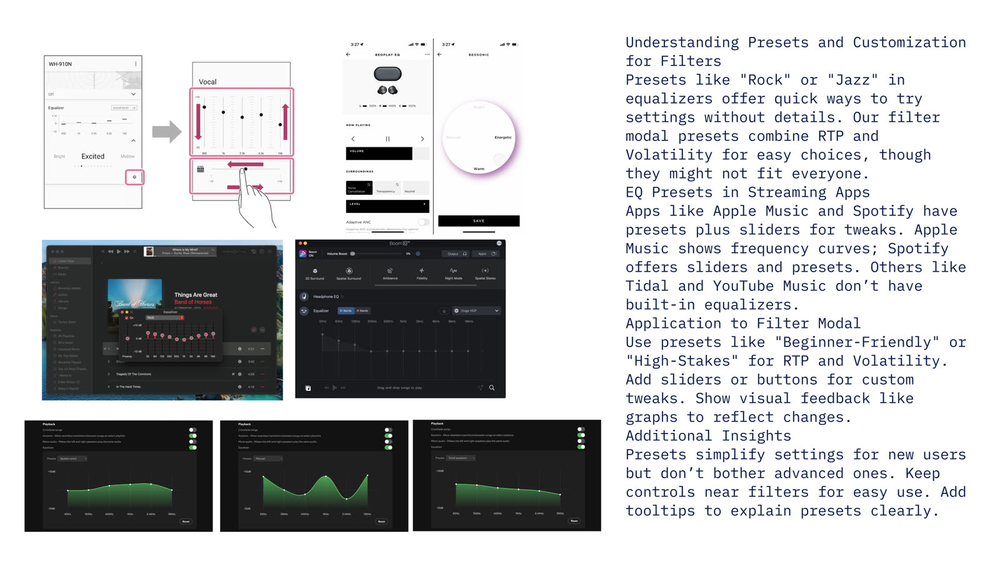
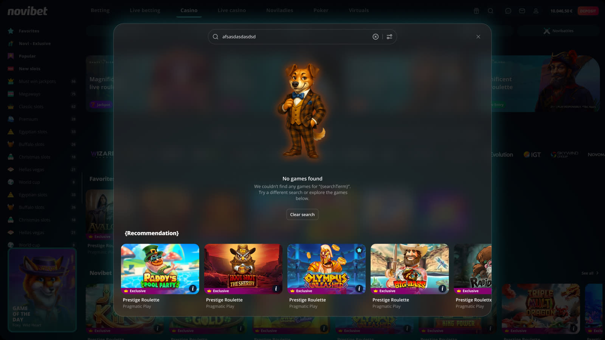
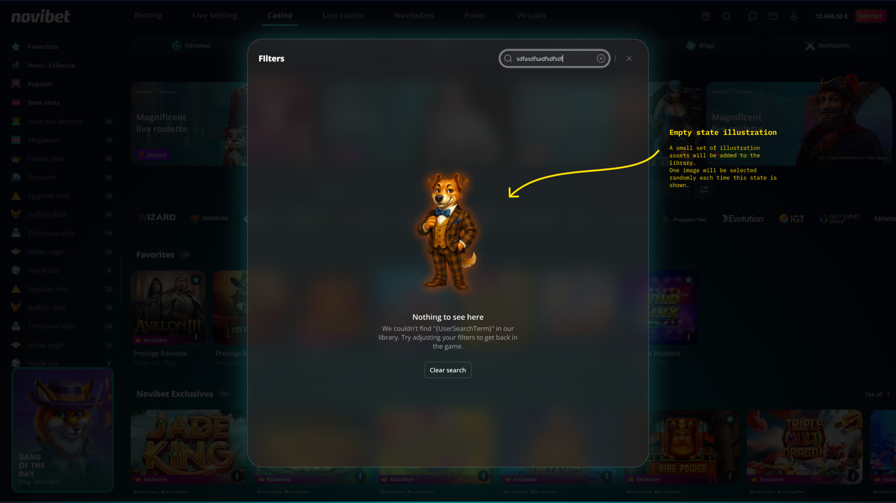

Search & filter
A search and filtering experience designed around continuity, multi-game play, and a new way to translate technical casino attributes into how players actually want to play.
One search system, wherever the player is.
Casino discovery isn't limited to the lobby. Players might be browsing the homepage, already in a game, or running multiple frames at once. Global Search needed to work the same way across all of it, without forcing players to abandon what they were doing.
Filter needed to help players narrow a large library quickly, which led to Style of Play: a preset-first model that translates RTP and volatility into familiar play intentions, while keeping manual control one tap away.
The short version
Find the next game without losing the one you're already in.
Global Search handles where and how a player finds the next game. Filter helps narrow the library, with Style of Play bridging technical attributes and player intent.
Global Search from anywhere
Discover and launch games from the casino home or directly from an active game session.
Preserve the session
Empty slots fill automatically. When every frame is occupied, the player decides what happens next.
Filter by intent
Style of Play turns RTP and volatility into ready-made presets based on the kind of session a player wants.
What's live today
Global Search works the same way from the homepage or from inside a running game. Filter and Style of Play turn a large library into a shortlist in a few taps.
Global Search, happy path. Opening search from the casino home, the modal comes up over the page instead of navigating away.
Global Search, in-game. Same modal, opened while a game is running underneath, the session keeps going.
Filter and Style of Play. Home, open Filter, open Style of Play, apply, land in filtered Global Search results.
One part judgment, one part tested with real players
Grounded in judgment, not a study, yet
There is no moderated study behind the search modal, it shipped based on the complaint volume covered in the introduction above, not a formal test.
Formal validation is planned for iteration 2, where open questions on result grouping are being worked through with product and engineering before anything locks.
Tested on real players before anything shipped
Players knew the kind of experience they wanted, but not necessarily the terminology behind it.
Player intent was already clear
Players described what they wanted in familiar terms such as quick wins, bigger wins, lower risk, shorter sessions, or balanced gameplay.
RTP and volatility, useful but poorly understood
Those attributes influence the experience, but they were not consistently understood or naturally used to describe a preference.
Discovery could become guesswork
Without guidance, choosing from a large game library could fall back to theme, provider familiarity, or trial and error.
I didn't realize I switched to custom, nothing really changed.
Custom/manual mode wasn't visible enough. Users overrode a preset without noticing, most expected a color change, highlight, or banner the moment they did. Presets themselves landed well, "quick, simple, ready-made", but people wanted to see the effect the instant they tapped one.
Why isn't the RTP max locked at 97%? Feels odd.
RTP and volatility understanding varies a lot. Experienced players read the numbers fine, casual players went by feeling, not percentages, and slider ranges confused more than one participant. Several asked to save their own preset outright, "what I always play."
Where the current experience breaks
Discovery could interrupt the current context
Players needed a fast way to find the next game, whether browsing or already playing. The old redirect could pull them out of an active session.
Search hard redirects the player away. The page they were on disappears the moment search opens. Browser back doesn't reliably recover it, every search is a full page load, not an in-place action.
Mid-game, that redirect loses the session. The part that matters most, it doesn't just lose a page, it loses whatever state the game session was carrying.
Player complaints: a steady volume of players reporting lost sessions and context after using search. No formal metrics, the complaint volume was the signal on its own.
The system's language was not always the player's language
RTP and volatility matter, but they're rarely how someone describes the experience they want.
RTP and volatility are important and poorly understood. Even experienced players misread the percentages and tiers. What they actually care about is what those attributes affect, win frequency, risk, session length, payout style, not the terminology.
Without guidance, discovery is guesswork. Players scroll dozens or hundreds of games on theme or brand familiarity alone, slower and more frictional for anyone who just wants to start playing.
RTP and volatility complaints predate this project. Style of Play educates through presets and familiar naming, quick wins, casual fun, big thrills, instead of raw percentages.
Global Search handles where and how players discover the next game. Filter handles how they narrow the library. Style of Play connects technical filtering with player intent.
How each piece works
A non destructive overlay, not a redirect
The page underneath stays. The session stays.
Search, browse, select, play
The happy path is simple: search, browse, select, play. Global Search opens on top of the lobby or the game instead of navigating away. Dismiss returns the player exactly where they were, nothing underneath is torn down.
The same Global Search pattern can start from two places, the casino homepage or an active game view. Same modal, same behaviour, either way in.
What it preserves
Cancel really cancels
Dismiss returns you exactly where you were.
Reads where it opens
The modal knows the page underneath it.
Game keeps running
The active session is never touched.
Redirect vs modal
| Dimension | Before, redirect | Now, modal |
|---|---|---|
| Page load | Full reload | Instant |
| Context | Lost | Preserved |
| Game session | Lost | Untouched |
Empty slot, automatic
Multi-game play adds a second frame. With a 2x layout running, one frame occupied and one empty, selecting a game through Global Search fills the empty slot automatically. No extra decision required, the player just gets their second game.
Every frame full, three outcomes
When the current layout is full, nothing gets silently replaced or discarded. The player sees three ways forward.
Expand the layout
Move to the next larger grid and place the selected game in the first available slot.
Replace a current game
Let the player choose which active frame should be replaced.
Start fresh in 1x
Leave the current multi-game session and launch the newly selected game on its own.

All slots occupied. The player picks a slot to replace, switches to a bigger layout to add without replacing, or starts fresh in 1x.
Presets first, manual close behind
Three building blocks, wrapped around the same idea a good audio EQ uses: a fast, confident default, with real control one tap away for anyone who wants it.
Two ways into Filter
From Home. Filter can open directly from the homepage, no Global Search needed underneath. On apply, Filter fades down as the results modal fades up, landing the player in filtered results. It reads as one continuous motion, not a hard swap between screens.

Filter opened directly from Home, then the transition into filtered Global Search results.
From Global Search. Filter opens as its own modal on top rather than closing Search to make room. Search dims and scales down slightly, staying visible, then returns to full size once Filter closes. Same non-destructive principle as the redirect fix, one layer deeper: nothing underneath gets torn down to open something on top of it.
Stacking rather than replacing keeps the previous action visible and avoids interrupting the player mid-decision, the same context-preserving principle as Global Search.

Global Search stays open behind filter, dimmed and slightly scaled down.
Three components
RTP
Return to player, one of two attributes the whole feature is built around.
Volatility
Win frequency and size, the other core attribute, shown as chips rather than a raw number.
Ready-made presets
Common player profiles mapped to an RTP and volatility combination, so nobody has to translate the jargon themselves.
A Custom/Manual mode sits alongside the presets for anyone who wants to set RTP and volatility directly. Five named presets ship in total, each one a fixed RTP range plus a volatility band, ordered as a natural risk spectrum from safest to boldest so the row itself reads left to right as low to high risk.
Quick Wins · Casual Fun · Long Run · Big Thrills · High Stakes · Custom

Style of Play on mobile, all six presets. Each one sets its own volatility and RTP, read only until Custom is touched.
On small screens the preset row scrolls horizontally while the divider and Custom button stay pinned to the right edge. Whichever preset is active snaps to the left edge, center, or right edge of the row depending on its position, so the selected one is never left half cut off.
Design inspiration, borrowed from audio EQ presets
Instead of looking only at other casino filters, the interaction model borrowed from consumer audio products. Sony's Headphones app, Apple Music and Spotify use presets as an approachable starting point, while Bang & Olufsen's BeoSonic shows how manual control can stay expressive without exposing raw settings first.
Presets are the foundation, manual tuning stays close, and every change gets visible feedback.
Choose a preset → See mapped values → Fine-tune with Custom

Reference set: Sony, Bang & Olufsen, Apple Music, and other audio apps.

Global Search, no results. Recommended games take the place of a dead end.

Filters, no results. One of a small set of mascot illustrations, picked at random each time this state shows.
What testing changed
The study surfaced one real problem: people didn't notice when they'd overridden a preset by touching a slider or chip, custom mode looked identical to whatever preset they started from. Fix direction: give custom mode its own visual state the instant it's overridden, and make preset taps respond instantly rather than waiting on a confirm step.
A revert icon stays hidden until a Volatility chip is touched or the RTP slider is moved, the exact moment a preset gets silently overridden. Tapping it clears the selection and hides the icon again, custom mode now has its own visible marker.
Humanized copy over raw percentages ("small frequent wins vs. big rare wins" rather than an RTP number), plus a repeated ask for personalization, a saved preset, or a "your usual games" view. A real opportunity, not yet scoped.
Where each part stands
Research did not end as a list of open problems. It changed the product.
Testing highlighted where preset and manual state, feedback, and the explanation of RTP and volatility needed to be clearer. Those findings informed subsequent iterations before release.
No usage data yet
This iteration doesn't have metrics attached. The case for it rests on the session-loss stakes above, not a stat strip.
Result grouping is still ahead
How Global Search results get grouped is still being worked through with product and engineering, feeding into ongoing stakeholder review.
Complaints down, reaction positive
Session and context loss complaints have gone down since the modal shipped. Internal reaction has been positive too, it's more encouraging to click search now that closing it doesn't cost you your spot.
Complaints went down after launch
Since style of play started rolling out, RTP and volatility related complaints have dropped. The clearest real-world signal that presets and familiar naming are closing the gap raw percentages couldn't.
Validated with real players too
The usability study backs up what the complaint trend already showed. Presets were understood and perceived as a quicker, simpler way to narrow the library.
Personalization is the strongest opening
Multiple participants asked to save their own preset unprompted, "what I always play." Not yet scoped, but the clearest next move the research pointed at.
The custom-mode fix shipped with it
Custom mode needed to look different from a preset the instant someone overrides it. The reset icon logic is the answer that went out, direct response to what the study found.
What I'd tighten next time
Preserve context until the user chooses otherwise.
Global Search, multi-game safeguards, and the Search / Filter relationship all came back to the same principle: avoid destroying useful state just to move the player forward.
Translate system language into user intent.
Style of Play became useful because players could express the kind of experience they wanted without first having to understand RTP and volatility.
Edge cases are part of the core experience.
The interesting product work was not only getting someone from Global Search to a game. It was deciding what should happen when their active session was already full.